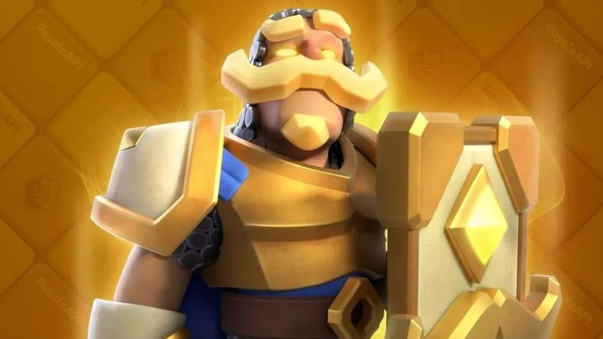

Capacidad defensiva y ofensiva excelente, costo de elixir bueno: ni muy caro y bastante accesible. Te puede salvar en múltiples ocasiones y, si puedes usar a su evolución o versión héroe, tienes una mayor posibilidad de jugadas tanto defensivas como ofensivas. Es uno de los mejores minitanques y una de las primeras cartas que te dan al iniciar el juego, por eso te acompaña desde el inicio de tu partida.
🟢 Click aquí para ver: Mejores Características
| Característica Clave | Opinión de Pros / YouTubers | Impacto en la Partida |
|---|---|---|
| Eficiencia de Elixir (Costo 3) | Permite realizar intercambios positivos de elixir constantemente en defensa. | Detiene cartas de 4 o 5 de elixir, dándote ventaja económica inmediata. |
| Versión Héroe / Evolución | Desbloquea mecánicas rotas que absorben daño masivo o limpian líneas enteras. | Obliga al oponente a gastar recursos extra y cambia el ritmo del ataque. |
| Rol de Minitanque Perfecto | Es el soporte ideal para tanquear ballestas, morteros o contragolpes rápidos. | Protege a tus tropas de daño a distancia mientras elimina amenazas en tu zona. |